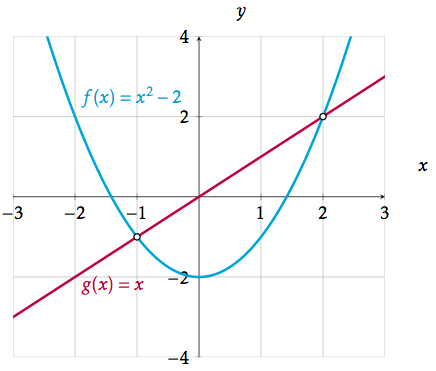

Andregradslikningssystem
Contents
Andregradslikningssystem¶
Likningssystem (eller likningssett) av første grad har du sett på tidligere. Nå er turen kommet til at minst én av likningene er av andre grad.
Målet er at du skal:
kunne løse likningssystem av andre grad både ved regning og med digitale hjelpemidler
kunne finne skjæringspunkt med digitale verktøy
Skjæringspunkt¶
Tidligere har du lært hvordan du kan finne skjæringspunktene mellom grafene til funksjonene nedenfor.

Uten at vi nevnte det, er denne oppgaven en løsning av et likningssystem med andregradslikning. Bytter vi ut funksjonsnavnene med \(y\) kan vi skrive likningssystemet slik:
Vi er ute etter å finne \(x\)- og \(y\)-verdiene som passer i likningssystemet. Vi kan gjøre det ved å benytte innsettingsmetoden. Her er likningene pent ordnet og vi kan sette inn for \(y\). Da får vi denne likningen:
Likningssystemet kunne også sett slik ut.
Hvorfor er det samme likningssystem som over?
Regn ut og sjekk at \(x=-1 \wedge y=-1 \vee x=2 \wedge y=2\) er løsning av likningssystemet over.
Symbolet \(\wedge \) kan oversetter med ordet og. \(x=-1 \wedge y=-1\) betyr at \(x=-1\) og \(y=-1\) må inntreffe samtidig.
Symbolet \(\vee\) kan oversetter med ordet eller, enten den ene eller den andre løsningen.
Det vil si at når løsningen er \(x=-1 \wedge y=-1 \vee x=2 \wedge y=2\), betyr den ene løsningen er \(x=-1 \wedge y=-1\) eller den andre løsningen er \(x=2 \wedge y=2\).
Oppgave 1
Løs likningssystemet
Løsning

Løsning av likningssystem av andre grad¶
Løsning med digitale verktøy¶
Løs likningssystemet
Denne oppgaven løste du tidligere. Her kan du se hvordan vi løser en slik oppgave med GeoGebra, hvor løsningen kan se slik ut:
Legg merke til at vi lister opp de to likningene og bruker krøll-parenteser i opplistingen: {x^(2)+y=5, 2x+y=2}. Det samme gjelder i listen over de ukjente vi vil løse med hensyn på. Legg også merke til at vi bruker komma mellom de to likningene (og de to variablene).
Vi skriver svaret slik
$ x=-1 \wedge y=4 ) ( \vee) ( x=3 \wedge y=-4)